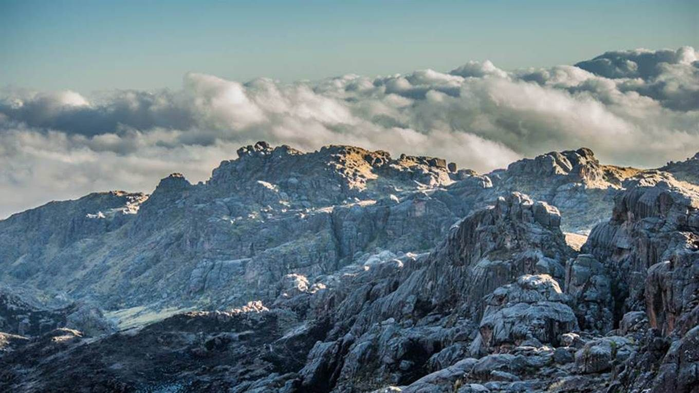

| Tiempo y duracion | Dificultad | Equipamiento | Epoca recomendada |
|---|---|---|---|
| 12 hs aproximadamente (puede ser en 2 dias) | Fisica: media. Tecnica: facil | Grampones, bastones, piqueta y casco | Octubre a marzo |